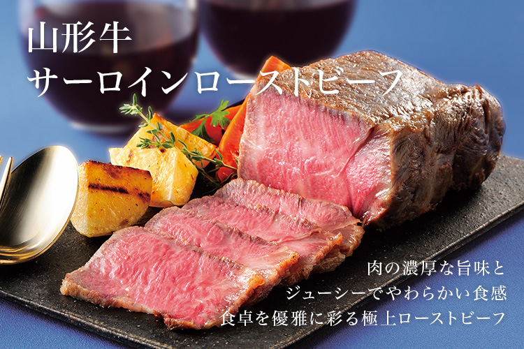
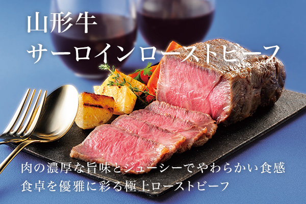
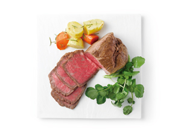
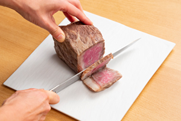

リンベルが日本一と認めた「極みの味」
山形が生んだ極上のサーロインローストビーフ


ここが「極み」
- 山形が誇るブランド黒毛和種「山形牛」のサーロイン部を厳選使用
- 山形県・朝日町産のブドウでつくった赤ワインで味付け
- 添加物は一切不使用
- 熟成と同じ効果のある低温加熱でじっくり調理
- 特殊な冷凍技術で、ロースト直後の 美味しさをそのままお届け
山形牛のサーロインを贅沢に使って作ったローストビーフです。
山形県産のブドウでつくった赤ワイン、塩、コショウ、ニンニクで下味をつけてから、肉の旨みが逃がさないように、肉表面をしっかりと焼き、低温で時間をかけじっくりと加熱。特殊な冷凍技術で、ロースト直後の美味しさをそのままお届けしますので、ご自宅で、焼きたての肉の濃厚な旨みとジューシーでやわらかな食感がお楽みいただけます。
商品のこだわりポイント
こだわりの製法で焼き上げた味わいを、ロースト直後の味わいと香りでお届けします


山形県内で最も長い期間、育成・肥育された黒毛和種の肉牛で、その肉質が少なくとも3から4等級以上のものだけを品質規格統一したのが、「山形牛」と呼ばれるブランド牛です。良質の穀物飼料と豊かな自然環境で育てられた山形牛は、肉のきめが細かく、脂肪に旨味があるのが、その特徴です。
また、今回使用するサーロインは、山形牛の中でも肉繊維が細かく、しっかり脂ものっていて食べ応えがある最高においしい部位として知られ、ステーキのほか、しゃぶしゃぶやローストビーフなどに重用される希少な部位。
今回ご提供する「山形牛サーロインローストビーフ」は、その希少な山形牛のサーロインを使い、「命を育てるのは食品から」という思いで食づくりに取り組む、山形の精肉加工会社とリンベルのこだわりとで生まれた、添加物を一切使わず、素材本来の旨味を引き出した逸品です。
そのおいしさの秘密は、山形牛のサーロインという厳選素材はもちろん、手間暇をかけたこだわりの製法にも隠されています。
まずロース肉を丁寧に柵取りし、山形県・朝日町産のブドウでつくった赤ワイン、塩、コショウ、ニンニクで下味をつけ、肉の旨味を逃がすことないよう、肉の表面をしっかり焼いています。次に、山形牛の牛脂をからませながら、味に熟成を加えるために低温で時間をかけてじっくり加熱。
この手間を惜しまぬ、こだわりの2段製法で焼き上げるからこそ、他にはないジューシーでとろけるような食感と、濃厚な深い味わいが生まれるのです。
しかも美味しいまま食べていただけるよう、ロースト後はCAS冷凍（細胞を壊さずに冷凍する方法）という特別な方法で凍結。うま味を逃すことない肉本来の味わいと、焼き上げ直後の芳醇な香りをそのままお届けいたします。
肉の旨味と食感の両方をご堪能できるので、厚めに切ってお召し上がりになるのがおすすめです。
美しい木箱入りでお届けする、この「山形牛サーロインローストビーフ」は、特別な日のお食事にはもちろん、大切な方への贈り物にもふさわしい逸品です。
山形牛とは
昭和37年、当時の県知事の首唱により、山形県内各地の優秀な牛を品質規格統一し「山形牛」と命名。山形特有の夏冬、そして昼夜の寒暖差が良質な肉質に育てる。脂肪の融点が低く、口どけがよい。
料理研究家やグルメライターも絶賛！
「美食のスペシャリスト」の方々からも
お褒めの言葉をいただいています！

さっぱりとした脂身の甘みと
肉のうまみが贅沢
料理研究家・フードコーディネーター 三島葉子さん
詳しくはこちら